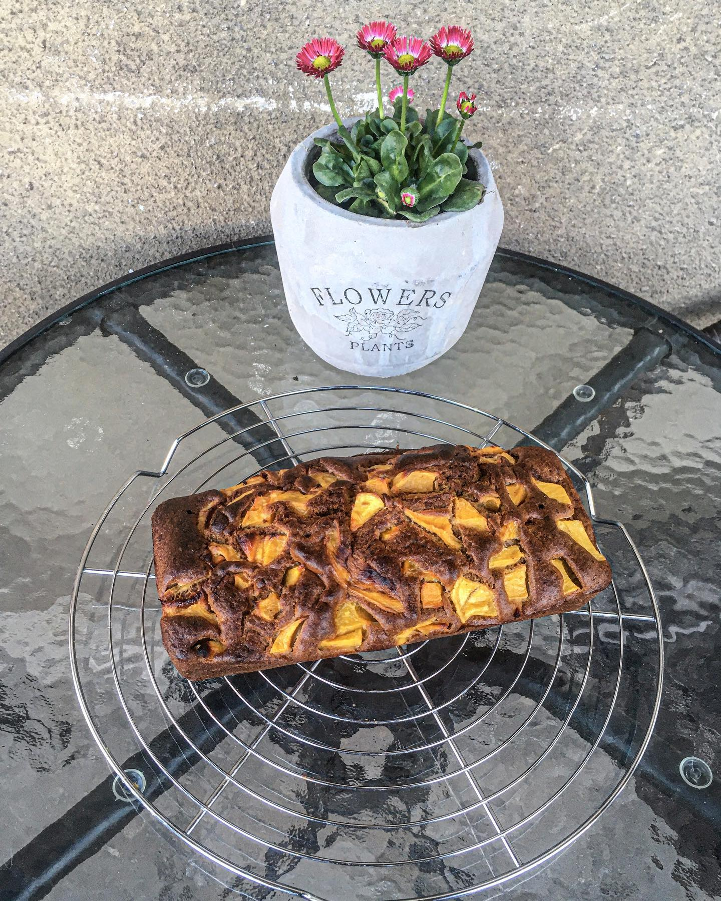

Ovocný chlebíček podľa @levos_foodlover — Normy Jedál
#baking#fruitbread#breadywithbanana#inkitchen#bakingtime#sweets#sweetstagram#sweetbread#ovocnychlebicek#chlebiceksbananem#domacipeceni#sladkepeceni#pecuslaskou#zdravejsi#zdravejsichlebicek#sbananem#recipe#EASY 😋
50g třtinového cukru
50g másla
= VYŠLEHAT DO PĚNY
Poté přidáme:
2 vejce a šlehame cca 2min.
přidáme cca 60ml mléka
a 1 větší rozmačkany banán 🥳
Přisypeme
“SUCHOU SMĚS”
lžička jedle sody,
5g prášku do pečiva ,
100g špaldove hladké mouky
50g celozrnne mouky
Vše smícháme , nakonec přidáme nasekanou hořkou alespoň 70-80% čokoládu😋promícháme ,v případě přidáme trochu mléka ,aby byla konzistence těsta tak akorát do formy 👍
Dáme do silikonové formy třeba na”chlebicek” ,ještě nakrájíme MANGO a pečeme cca 40 minut na 180 stupňů dle typu trouby ☺️ MŇAM MŇAM A DOBROU CHUŤ 🤘🏼